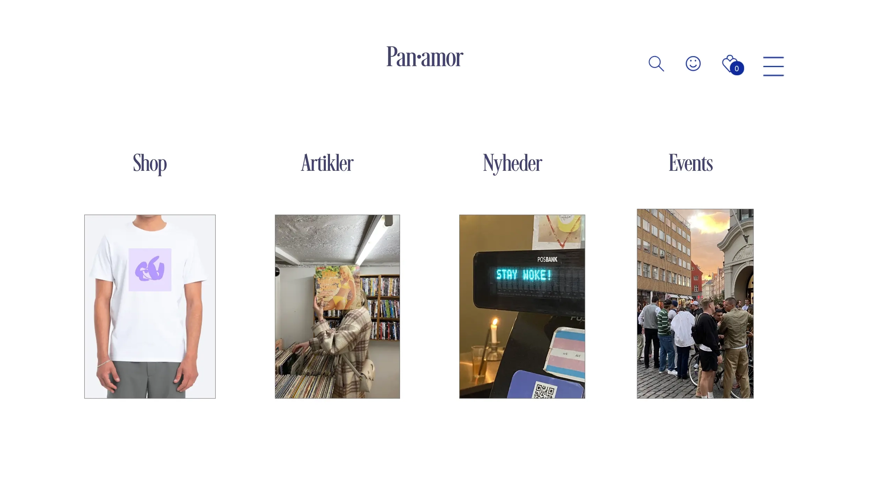

T3 Grundlæggende UX
I Tema 3 blev vi introduceret til UX rolle i de forskellige designdiscipliner og dets påvirkning på ens brugeroplevelse. I startfasen da jeg skulle danne mit koncept undersøgte jeg hvilken målgruppe jeg ville henvende mig til og hvordan jeg som afsender bedst kunne afspejle mit produkt. Derefter i min research fase benyttede jeg mig af Desk research, Surveys, Observation og Interviews for at undersøge markedet og brugeren inden jeg gik igang med min komplette designprocess. Igennem moodboards og mit styletile kom jeg frem til en designløsning som passede godt sammen med min USP. Ved brug af sketching og desk reseach kom jeg derefter frem til mit udgangspunkt designmæssigt.
Skitser
Reseach
Styletile, Elementcollage og Moodboard
Refleksion
Mit forløb med Grundlæggende UX var en lærerig oplevelse omkring brugergrænseflader og research. Ved at lære de grundlæggende metoder, og teknologier til design af digitale brugeroplevelser har jeg fået en bedre forståelse for alt forarbejdet der ligger inden man begynder på selve projektet. Jeg har fået et meget bedre indblik i hvor vigtigt det er at teste sin løsninger på potentielle brugere og derved lære af de kommentarer og test-resultater man får. Ved at inkorporere den respons man får kan man derfor skabe en mere brugervenlig løsning som er navigerbart og nemt at forstår.